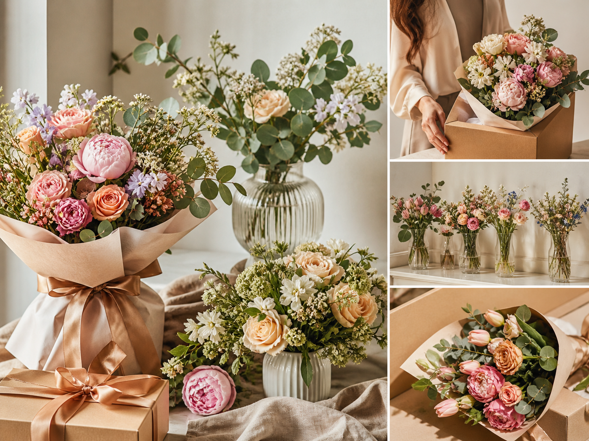

Bouquets sur mesure
Bouquets sur mesureUne composition unique, douce ou affirmée, préparée selon l’occasion et votre palette.
À Riaillé, Atelier Ondine imagine des bouquets, décors et gestes floraux pour les maisons sensibles, les mariages intimes et les tables que l’on n’oublie pas.


Nous cherchons l’équilibre : une tige libre, une couleur basse, un parfum discret.
Atelier Ondine est un fleuriste artisanal fictif installé à Riaillé. Son univers mêle fleurs de saison, gestes précis et compositions souples, avec cette élégance naturelle que l’on remarque sans qu’elle ne force jamais le regard.
Pas de bouquet standard posé sur une étagère. Ici, chaque demande commence par une intention, une saison, une personne à toucher.
Bouquets sur mesureUne composition unique, douce ou affirmée, préparée selon l’occasion et votre palette.
Bouquets de mariée, boutonnières, arches et tables fleuries avec une ligne naturelle, jamais figée.
 Événements
ÉvénementsUn décor floral pensé pour accompagner un lieu, une lumière, un rythme de réception.

04Abonnements florauxDes fleurs fraîches à la maison, en boutique ou au bureau, avec une cadence simple.
 Décoration florale
Décoration floraleVitrines, tables, buffets et coins de vie habillés par petites touches végétales.
Riaillé, Châteaubriant, Nort-sur-Erdre, Ancenis et les communes alentour.
Ce site est une démonstration : les commandes ne sont pas réellement transmises. Il présente une expérience crédible pour une boutique florale locale haut de gamme.
Livraison locale possible selon disponibilité et fragilité des fleurs.
Commandes spéciales recommandées 48 h à l’avance.
Demande urgente : appel direct ou message WhatsApp.


Fleurs fraîchesDes arrivages choisis pour leur tenue, leur grain et leur juste maturité.
Compositions artisanalesUn travail à la main, sans recette automatique ni bouquet impersonnel.
CréativitéDes associations sensibles, parfois inattendues, toujours lisibles.
ÉcouteUne réponse claire, douce, adaptée à votre moment et à votre budget.
ProximitéUne présence locale, attentive aux maisons, aux lieux et aux saisons du territoire.
Une galerie pensée comme un moodboard vivant : bouquets premium, mains au travail, détails et atmosphères de boutique.


“Le bouquet avait quelque chose de très personnel, pas seulement joli. Ma mère l’a gardé au centre de la table toute la semaine.”
“Pour notre dîner d’entreprise, l’atelier a compris l’ambiance immédiatement. Sobre, élégant, très naturel.”
“Des fleurs fraîches, un conseil délicat et une livraison vraiment soignée. On sent le travail d’artisan.”
Oui, l’atelier travaille à partir d’une palette. Certaines fleurs dépendent toutefois des arrivages et de la saison.
Les projets autour de Châteaubriant, Nort-sur-Erdre, Ancenis et alentours sont privilégiés. Chaque demande est étudiée selon le lieu.
Pour un bouquet simple, le jour même peut suffire selon disponibilité. Pour un événement, mieux vaut prévoir plusieurs semaines.
Non. Il s’agit d’un site vitrine de démonstration conçu pour présenter une boutique florale fictive.